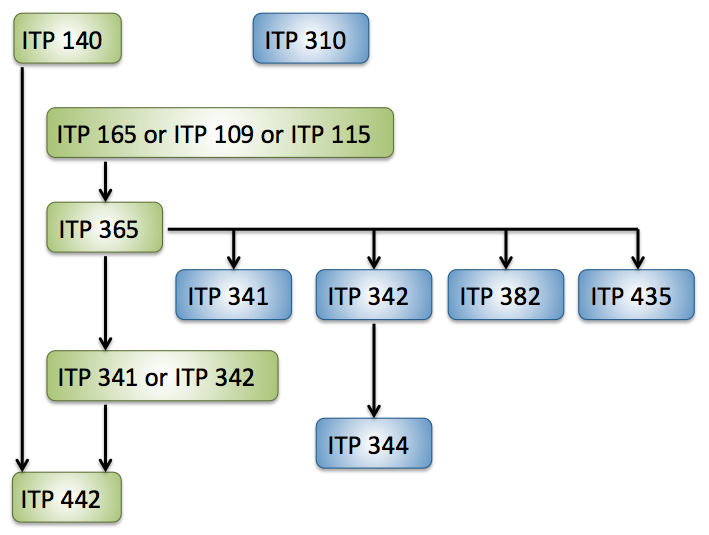

As of Fall 2013, we have a new minor at USC entitled Mobile Application Development. To support the needs of the students and better prepare them for jobs in the mobile industry, the curriculum was updated. The updated Mobile Application Development minor is effective Fall 2014.
The revised minor requirements for completion are five core courses and two electives for a total of 20 units.
Choose one from the following (2 or 3 units):
ITP 165* - Introduction to C++ Programming (2) [Recommended]
ITP 109 - Introduction to Java Programming (2)
ITP 115 - Programming in Python (3)
Choose one from the following (3 units):
ITP 341 - App Development for Phones and Tablets (3) [Android]
ITP 342 - Mobile App Development (3) [iOS]
All of the following courses (9 units):
ITP 140 - Mobile Application Technologies (2)
ITP 365* - Managing Game Data (3) [Data Modeling for Games and Mobile]
ITP 442 - Mobile App Project (4) [Capstone]
ITP 310 - Design for User Experience (3)
ITP 341 - App Development for Phones and Tablets (3) [Android]
ITP 342 - Mobile App Development (3) [iOS]
ITP 344 - Advanced Topics in Mobile App Development (3) [Advanced iOS]
ITP 382 - Mobile Game Programming (3)
ITP 435 - Professional C++ (3)
* ITP 165 and ITP 365 can be waived for students who have taken CSCI 103 and CSCI 104.
The following flow chart displays the required courses (in green) as well as the paths to elective courses (in blue).
